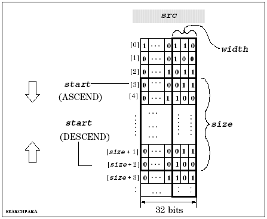

DSP_SEARCH_PARA
This API searches for a specified bit pattern that is contained within an element of an integer array.
DSP_SEARCH_PARA searches for the specified pattern within each element of the src. After the pattern is found match times, the subscript of the corresponding element is returned to found.
The search starts at the start element. The search checks the specified rightmost bits (width) of the specified elements (size). The direction of the search is specified by direction as follows:

If DESCEND is selected for direction, the match is also for the descending direction.
If the number of pattern bits is more than width, DSP_SEARCH_PARA searches for the rightmost width bits of pattern. For example, if width is 2 and pattern is "1001" ("9" in decimal format), DSP_SEARCH_PARA searches for the right two bits "01" ("1" in decimal format).
pattern must be a decimal integer that corresponds to the desired bit pattern. For example, to search for "110", specify "6" for pattern.
If the number of elements that have pattern is less than match, DSP_SEARCH_PARA returns "-1" to found, instead of a subscript.
This API is defined in the header file /opt/hp93000/soc/prod_com/include/MAPI/libdsp.h.
Syntax
DSP_SEARCH_PARA(ARRAY_I& src, INT *found,
INT size, INT start,
INT pattern, INT width, INT match,
INT direction);
DSP_SEARCH_PARA(INT *src, INT *found, INT size,
INT start, INT pattern, INT width,
INT match, INT direction);I/O |
Parameter |
Description / Range |
|---|---|---|
I |
src |
Source array |
O |
found |
Found point After pattern is found match times, the subscript of the corresponding element is stored into found. |
I |
array_size |
Size of array to be processed |
I |
size |
Number of elements to be processed 1 ≤ size ≤ (size of src) |
I |
start |
Subscript at which to start the search For direction = ASCEND, 0 ≤ start ≤ (number of source array) - size + 1 For direction = DESCEND, size -1 ≤ start ≤ (number of source array) |
I |
pattern |
Bit pattern to be searched for |
I |
width |
Number of valid bits for pattern 1 ≤ width ≤ 32 |
I |
match |
After pattern is found match times, the subscript of the corresponding element is stored into found. |
I |
direction |
Direction of searching ASCEND: Ascending (increasing subscripts) DESCEND: Descending (decreasing subscripts) |
Example
It is assumed that the source array has the following elements:
source[0]=0...01110
source[1]=0...00110
source[2]=0...00101
source[3]=0...01010
source[4]=0...01001
source[5]=0...00010
DSP_SEARCH_PARA(source, point, 6, 5, 2, 2, 3, DESCEND);
DSP_SEARCH_PARA searches for bit pattern "10" from subscript 5 to 0. The bit pattern is found at subscripts 5, 3, 1, and 0. The match = 3, so DSP_SEARCH_PARA returns 1 to point because this is the subscript of the 3rd found pattern in the descending direction.